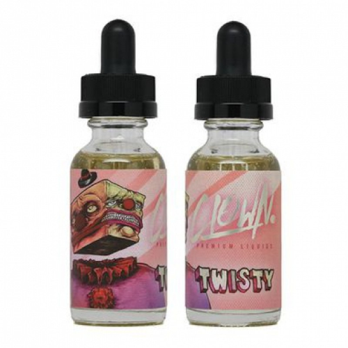

Clown Twisty

Описание
- Объём: 30мл
- Крепость: 3мг
- PG/VG: 35/75
- Вкус: йогурт, малина
- Стоимость: 700 Р
Яркое и нежное лакомство, готовое буквально сбить с ног своим прекрасным ароматом малины, которая своим объёмом кажется готова заполонить весь мир - так её много. Нежный сливочный йогурт создают прекрасную подложку во вкусе, придавая ему мягкости и создавая прекрасный баланс аромата на каждый день.